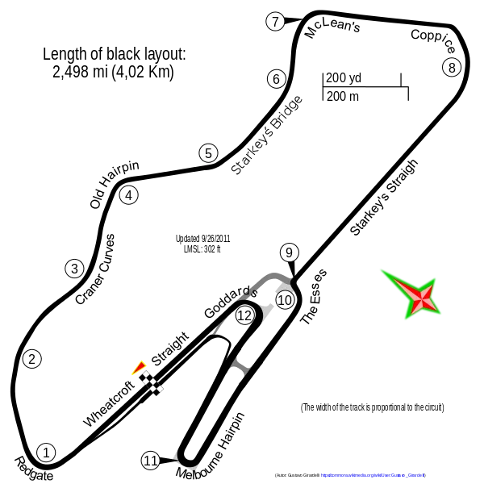

맥라렌-포드, 그리고 도닝턴의 기적
맥라렌은 뒤늦게서야 포드의 V8 엔진으로 엔진을 교체했고 액티브 서스펜션 또한 탑재할 수 있었다. 시즌 5승을 할 정도로 차는 경쟁력을 되찾았으나 이미 강했던 윌리엄스-르노를 따라잡기에는 역부족이었다.
하지만 세나는 몇몇 경기에서 인상적인 플레이를 보여줬는데 도닝턴 파크에서의 유로피언 그랑프리가 그중 하나다.
▶ Click

경기 판도를 바꾼 하이테크의 등장
▲ 윌리엄스 FW14B의 움직임을 제어하는 액티브 서스펜션
1992년, 윌리엄스 팀은 액티브 서스펜션이라는 혁신적인 기술을 도입해 그리드를 장악했다.
컴퓨터가 노면 상태를 실시간으로 분석해 차체의 높이를 자동으로 조절하는 이 기술은 공기역학적 효율을 극대화시켜 다른 차들과 차원이 다른 속도를 만들어냈다.
"다른 행성에서 온 차 같다."
세나는 맥라렌 머신(MP4/7)으로 사력을 다해 쫓았지만, 기술의 격차 앞에서는 역부족이었다.
맥라렌은 뒤늦게서야 포드의 V8 엔진으로 엔진을 교체했고 액티브 서스펜션 또한 탑재할 수 있었다. 시즌 5승을 할 정도로 차는 경쟁력을 되찾았으나 이미 강했던 윌리엄스-르노를 따라잡기에는 역부족이었다.
하지만 세나는 몇몇 경기에서 인상적인 플레이를 보여줬는데 도닝턴 파크에서의 유로피언 그랑프리가 그중 하나다.
▶ Click


1994년, 세나는 그토록 원하던 윌리엄스-르노(Williams-Renault)로 이적했다.
최강의 팀과 최강의 드라이버가 만난, 완벽해 보이는 조합이었다.
하지만 FIA는 윌리엄스의 가장 강력한 무기였던
'액티브 서스펜션'을 전면 금지했다.
핵심 기술을 잃은 FW16은 밸런스가 엉망진창으로 무너져내렸다.